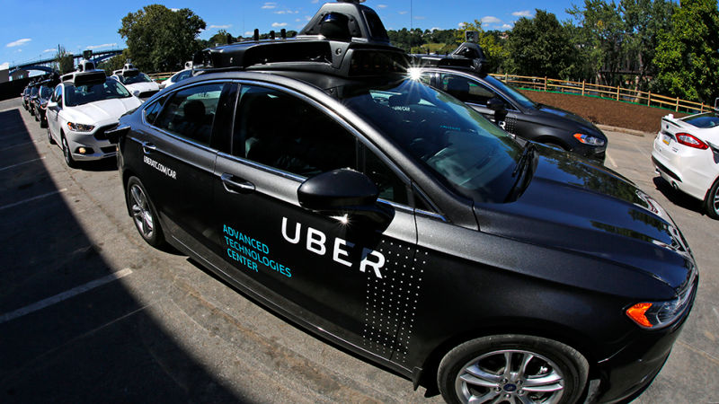
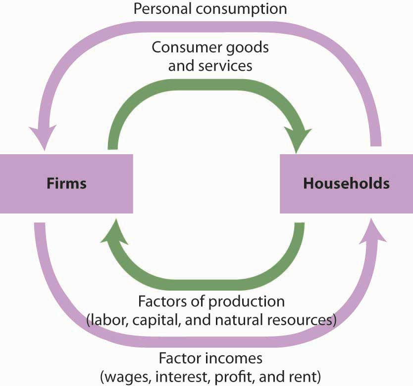

Are We Ready for a Revolutionary Technology?
Written by Peter Ding July 29, 2018In recent years, artificial intelligence is getting more and more attentions. In 2015, the famous computer program, Alpha Go, become the first artificial intelligence system to defeat a professional player in the board game Go. More impressively, it was able to beat almost all grandmasters of Go after only two years of development. The secret behind Alpha Go is simple – it was able to make the best decision based on the knowledge previously learned through an artificial neural network (a deep learning method) with extensive training. As you see, artificial intelligence is not an illusion anymore; it is really coming into our life.
In the past ten years, artificial intelligence developed rapidly with many significant algorithm breakthroughs. For example, a mature voice recognition system was once thought to be impossible in the 20th century. Researchers encountered many problems such as different accents, unclear speech, and background noise. Most importantly, they had no idea how humans interact with each other and understand their own languages. Not long after, deep learning was able to solve these problems based on neural networks. Nowadays, digital assistants, such as Amazon’s Alexa and Apple’s Siri, can achieve high accuracy for speech recognition with an error rate under five percent – almost like a real person. The average person speaks approximately 100 to 130 words per minute, but types only 30 to 40 words per minute. Using voice recognition as an alternative form for typing, people can achieve an extraordinary writing speed. From the convenience that voice recognition brings in life, we can recognize artificial intelligence as a tool that will significantly promote our productivity and create a serious influence in labor and job markets.
 Compare to the potential influence of artificial intelligence in other industries, the success of voice recognition is trivial. In the transportation industry, self-driving cars are making an intense revolution. A self-driving car is capable of detecting surrounding environment and navigate without human input using artificial intelligence technology. An autonomous system will not get tired and distracted, so it is significantly more reliable than a traditional human driver. As a leading transportation company, Uber launched its self-driving car program in Pittsburgh in 2016. The functions of the Uber autonomous vehicles cover ridesharing, shipping, and delivering. The program aims to build a safer, more affordable and accessible future transportation system. However, a fully developed self-driving system means that thousands of driver will lose their income. According to the American Trucking Association, there are 3.5 million truck drivers employed in the United States and 7.4 million people employed throughout the economy in jobs that relate to trucking activity. If the autopilot replaces all truck drivers, the stunning fact is that one of every 18 workers employed in this country will face the danger of losing their jobs. So, the question becomes when truck drivers leave their driver seat, how are they going to make a living?
As shown above, artificial intelligence will eliminate the dependency of human labors in many industries which result in a release of the large labor force. The dramatic unemployment rate becomes an inevitable challenge that artificial intelligence brings to the society. Indeed, in the history, technological progress usually accompanies with the elimination of jobs, but it also creates new employment opportunity. For example, the mass production of cars takes away the work of coachman, but also provide new jobs such as taxi cab driver. However, compared to the previous technology improvement, the revolutionary AI technology has two significant differences in their influence on the labor market – job quantity and accessibility.
The labor force influenced by artificial intelligence impact not only the truck drivers, and also hundreds of millions of employed workers in other industries. According to the Bureau of Labor Statistics, the four most common jobs in the United States today are the retail salesperson, cashiers, officer clerks, and combined food preparation and service workers. The total number of workers in these four categories is around thirteen million which is nearly ten percent of the labor force. These types of jobs all have one characteristic in common – they are boring and repetitive which is highly suitable to be replaced by an artificial intelligence system. When this large quantity of labor force released from the industries, it is difficult for the society to recreate jobs to accept the unemployed workers. In the history, the previous technology revolutions usually take a long time to progressively release workers from obsolete jobs. For instance, it took nearly fifty years for automobiles to dislodge the horse from public transportation. From the 19th century to the 20th century, the society had almost half of a decade to generate new jobs for the labor forces which is sufficient for unemployed workers to adapt to the new environment. However, the rapidly developing artificial intelligence technology could release an implausible quantity of labors in a short period of times which disturb the economic order and the stability of society.
The second difference between artificial intelligence and previous technological progress is the accessibility of new jobs. In general, the process for a worker to gain a new skill is not complex. Even for a coachman who has no experience with automobiles, learning car driving skill is not difficult. Thus, many new jobs that generated from technological progress are relatively acceptable for common labor force. However, the influence of artificial technology will take a rapid step to eliminate the repetitive low-end jobs. In a report from Digitimes, Foxconn, the supply giant behind Apple and many other major tech companies, announced that it has already deployed more than forty thousand Foxbots to replace human workers. It is not difficult to predict that artificial intelligence will make traditional mass manufacturing jobs disappear in the future, but innovational careers such as scientist and engineer cannot be easily replaced by computer programs and robots. So, the problem is that the labor population released by artificial intelligence are mostly less educated workers, yet the jobs that are difficult to challenge by artificial intelligence requires a high standard of employment. The occupations that created by artificial intelligence such as AI maintenance and upgrade needs substantial experience and education. Just as we usually do not expect a truck driver will become a computer engineer, the massive unemployed workers cannot enter another career field easily.
Although many people are willing to obtain new skill through hard work, they will most likely face another challenge – the cost of education. Especially in the United States, the price tag for a college education is depressing. According to the National Center for Education Statistics, the average tuition for an undergraduate institution is around twenty-two thousand dollars per year. To obtain high quality education resources, a four-year education requires a total of more than one hundred thousand dollars include living expense. The American education system indicates a high cost to regain employment. In particular, for involuntarily unemployed workers, the cost would be a ridiculous figure, and they are unlikely to afford education. As a result, many people cannot acquire an education because of poverty, and they will lose their opportunity to gain new labor skill. Also, lack of ability to work lead to long-term unemployment which worsens their financial situation. The severe consequence of technological unemployment will form a separate community of poor and unskilled where workers are isolated from the job market. With large labor population being segregated, the balanced social order will eventually collapse.
 The development of artificial intelligence continues the discussion of machine automation in the past. Since all businesses pursue the goal of profit-maximizing, firms tend to reduce their cost of production. While human resource takes a large component of the cost of production, artificial intelligent technology is favored by many firms, because it allows companies to hire less employee. However, business profit relies on human consumption, but consumption also based on consumer’s wage. The problem becomes complex since the cost of the human resource is the wage of consumers. If all companies cut down their cost of the human resource, the total national income will decrease substantially which result in a reduction in consumption, making business loss profit. When a company find difficult to make a profit, they tend to solve the problem by layoff, but the result will only be a declining economy.
Let us imagine living in a world that achieved full automation. In a city full of automatic service, you can experience the convenience of auto-driving, auto-cooking, and auto-delivering. When every job are taken by machines and computer programs, citizens in this world become poor and jobless. Although the stores sell everything, many people don't have the money to purchase. As more and more people starve to death, the community start to riot, and the world fell into economic chaos.
When the advanced tech companies are thirst to develop artificial intelligence today, the benefit of AI technology is obvious, but at the same time, we cannot ignore the risk of an economic crisis. The society should take steps to modify its educational policies and reform the education system in order to establish financial stability and healthy economic growth. While the technology satisfies people’s material need, society should shift the labor force’s attention to the pursuit of personal interest. Occupation like artist and scientist will be a flourishing career, and the society should be capable to accept the drastic economic change. Thus, before we enter a world with advanced artificial intelligent technology, we need to ask a question to the society: Are we ready for a revolutionary technology?